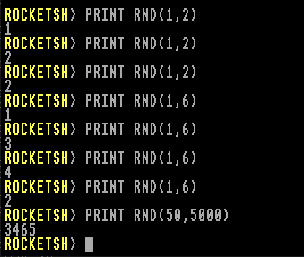

Returns a pseudo-random integer between min and max (inclusive). Both parameters must be integers, and the first must be less than or equal to the second.
The generator uses the Mersenne Twister (mt19937) algorithm, seeded from entropy provided by the operating system kernel.

Examples
REM Toss a coin (1 or 2)
PRINT RND(1, 2)
REM Roll a six-sided die
PRINT RND(1, 6)
REM Pick a random number between 50 and 5000
PRINT RND(50, 5000)
REM Generate 5 random values between 100 and 200
FOR i = 1 TO 5
PRINT RND(100, 200)
NEXT
Notes
- The result is an integer within the inclusive range
[min, max].
- If
min > max, behaviour is undefined.
- Suitable for general randomness in games, simulations, and sampling.
- Not cryptographically secure — although the kernel provides an unpredictable seed, the Mersenne Twister itself is deterministic and predictable if state is known.
- Retro Rocket BASIC difference: BBC BASIC used a 33-bit LFSR (linear feedback shift register). Retro Rocket uses a modern PRNG (Mersenne Twister).
See also: INT · ABS